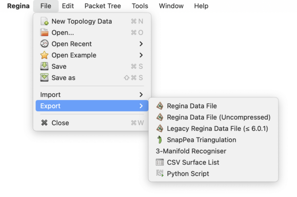
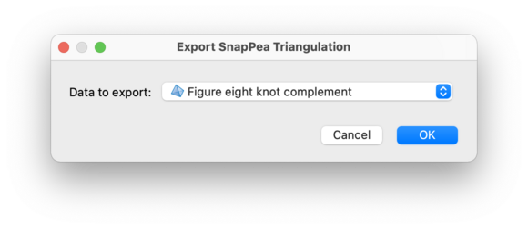
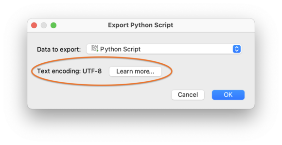

Exporting | |
| Prev | Importing and Exporting Data | Next |
An export involves writing data from your working packet tree into some foreign file format. For most formats you can only export small pieces of your packet tree at a time (such as individual triangulations). All exports are done through the → menu.

When you select an action from the → menu, Regina will ask you which packet to export. For most export formats Regina will only export the selected packet, but for some formats (such as Regina's own data format) it will export an entire packet subtree.

After selecting a packet, you will be asked to choose a filename for your export. Regina will then save the exported data to that file.
Regina can export data to the following file formats:
This is Regina's native file format, which saves data as compressed XML. Regina can export an entire packet subtree to this format: just choose the root of of the subtree as the packet to export. Regina will export not just the packet you select, but all of the packets beneath it in the tree.
This is a convenient way of extracting a small portion from a larger data file.
The packet that you select for export will become the top-level packet in the new tree (i.e., Regina will not add a new container to the top of the export data file).
There are three menu items for exporting to a Regina data file:
→→ will export the data as compressed XML using the new file format introduced with Regina 7.0. This is the default file format that is used when you select →.
→→ will export the data as plain XML (which means you can view the XML in your favourite text editor), again using the new file format introduced with Regina 7.0. Note that Regina can happily read data files in either compressed or uncompressed format.
→→ will export the data as compressed XML using the old file format from Regina 3.0–6.0.1.
If you simply want to view the raw XML content of an existing data file, you do not need to go to the trouble of exporting it in uncompressed format. Instead you can just pipe the data file through gunzip:
example$ cat file.rga | gunzip
You can export a 3-manifold triangulation (either one of Regina's native triangulations or a hybrid SnapPea triangulation) to the file format used by SnapPea / SnapPy. This is a plain text format, and is described in more detail in the section on SnapPea imports.
Not every Regina triangulation can be exported to SnapPea format. For instance, the triangulation cannot be invalid, and it may not have any boundary triangles. Regina will tell you if your triangulation cannot be exported.
If you are exporting one of Regina's native triangulation packets, then Regina will mark any SnapPea-specific information (such as fillings or peripheral curves) as unknown. If you are exporting one of Regina's hybrid SnapPea triangulations, then Regina will include this extra SnapPea-specific information in the exported file.
Any international characters in the exported SnapPea file will be encoded using UTF-8.
You can export a 3-manifold triangulation (either one of Regina's native triangulations or a hybrid SnapPea triangulation) to a plain text file that can be given as input to Matveev's 3-Manifold Recogniser.
As with the SnapPea format, not every data file can be exported to the 3-Manifold Recogniser. In particular, the triangulation cannot be invalid, and it may not have any boundary triangles. Regina will tell you if your triangulation cannot be exported.
You can export a normal surface list to a plain-text CSV file (comma-separated values), which you can easily import into a spreadsheet or database.
The CSV file will begin with a header row, followed by one line for each normal surface in the list. Surfaces will be exported in standard coordinates (that is, tri-quad coordinates for normal surfaces, or tri-quad-oct coordinates for almost normal surfaces). The fields in the CSV file will mirror the columns that you see in the normal surface coordinate viewer, and will include properties such as Euler characteristic and orientability as well as the surface coordinates themselves.
If any of the surfaces have names that include international characters, these names will be exported in UTF-8.
You can export a script packet as a regular Python file. Regina will add a special comment block to the top of the file, describing the packet label and the script variables. This special comment block allows you to import the script seamlessly back into Regina; see Python imports for details.
During the export, Regina will tell you how it will write any international characters in the script (that is, letters or symbols not found on a typical English keyboard). Such characters are stored using a text encoding, such as UTF-8 (a popular modern standard and the default in Regina), or LATIN1 (which has a long history of use with many Western European languages). If you wish to use a different encoding, you will need to set this in Regina's options. If you are not sure, the default of UTF-8 is typically a good choice. If you only ever use letters or symbols found on a typical English keyboard, you do not need to worry about text encodings at all.

| Prev | Contents | Next |
| Importing and Exporting Data | Up | Python Scripting |